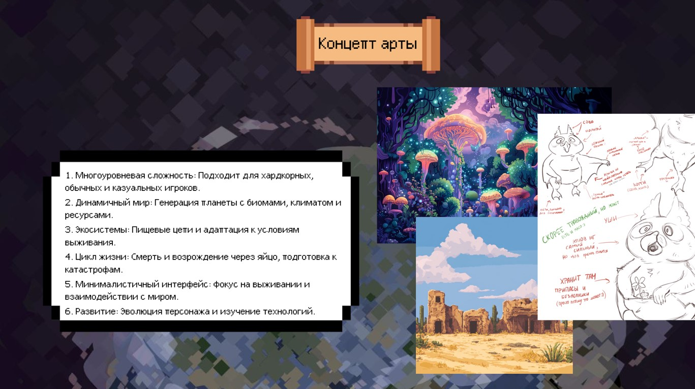
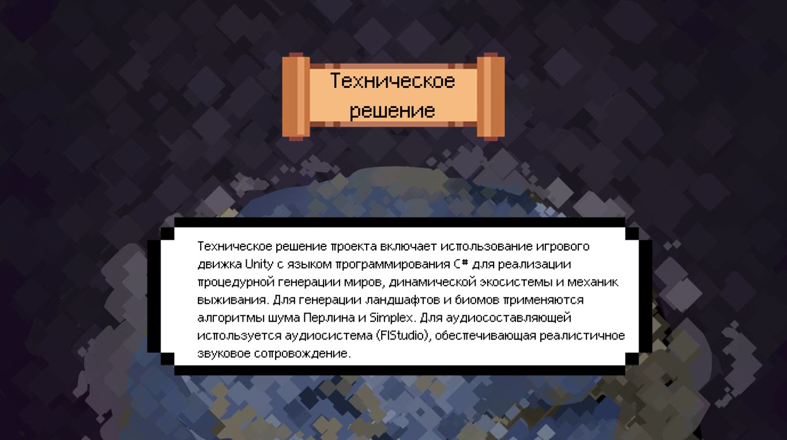

Описание проекта
Игра «ECOLLAPSE» — это уникальный симулятор, предлагающий игрокам погрузиться в мир выживания и эволюции. Игрок управляет существом, адаптирующимся к случайно сгенерированной среде, и его целью является выживание, развитие и раскрытие тайн окружающего мира.
Игровой процесс
Генерация мира: Каждый раз создаётся уникальный мир, в котором игрок сталкивается с различными биомами, флорой и фауной.
Выживание: Игрок находит еду, воду и укрытие, чтобы выжить в условиях дикой природы.
Адаптация и эволюция: У игрока есть возможность модернизировать своё существо, осваивая новые технологии и участвуя в естественном отборе.
Взаимодействие с окружающей средой: Игрок изучает различные виды, устанавливает симбиотические отношения и влияет на экосистему.
Развитие мира: Существуют циклы жизни, которые динамически меняют экосистему в зависимости от действий игроков.
Смерть и перерождение: После смерти игрока, его сущность может переродиться, сохранив некоторые возможности и навыки.
Основные особенности
Процедурная генерация: Каждая игра предлагает уникальные условия.
Реиграбельность: Игроки могут наслаждаться разными играми без повторения.
Динамическая экосистема: Реакции флоры и фауны на действия игрока.
Баланс эволюции: Каждое улучшение приносит свои плюсы и минусы.
Исследование: Игроки исследуют и учатся, чтобы максимально использовать свои возможности.
Цели игрока
Игроку нужно выжить, адаптироваться и эволюционировать, раскрывая загадки окружающего мира.
Наша команда упорно работает над улучшением игрового процесса, чтобы обеспечить уникальный опыт для каждого игрока!

